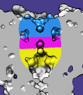

|  |
Color Zone colors surface models and their caps to match nearby selected atoms or markers. When a volume data isosurface is colored by zone, the data can be split into multiple sets accordingly. Color Zone information is included in saved sessions. See also: Surface Color, Surface Zone, Surface Capping, msc
There are several ways to start Color Zone, a tool in the Depiction and Volume Data categories (including from the Volume Viewer Tools menu). The Surface of interest should be chosen from the list of available surface models. Surfaces from Volume Viewer will be named according to the volume data set. Surfaces from Multiscale Models will be named for the PDB file from which the surfaces were generated.
Clicking Color colors vertices in the chosen surface that are within the specified distance (Coloring radius) of any of the currently selected atoms. When multiple selected atoms are within the cutoff distance, a vertex will be colored to match the closest one. Vertices not within the cutoff of any selected atom are assigned the default surface color (single-color mode). Each surface triangle is colored by linearly interpolating its vertex colors. Colors are defined by red, green, blue and opacity/transparency components.
By default, a zone is based only on distances to any selected atoms (and Volume Tracer markers); the bondzone command indicates that points along any selected bonds (and Volume Tracer links) should also be used. Vertices closer to a generated bond point than to an atom in the selection will then be assigned the bond color.
The Coloring radius can be adjusted by moving the slider or by typing in a new value. If the set of selected atoms is changed, or if a selected atom is recolored or repositioned relative to the surface, Color must be clicked again to update the surface coloring. Clicking Color will not update the surface colors when no atoms are selected.
Clicking Uncolor returns the surface to its default color (single-color mode).
When the zone-colored surface is a contour surface from Volume Viewer, clicking Split Map splits the corresponding volume data into separate data sets for the zones. A data set is created for each distinct color and for the "uncolored" data (in the zone remaining when the color zones are subtracted from the original volume). Values outside the respective zones are set to zero. The new data sets are named by appending numbers (0, 1, 2, ...) to the name of the original volume data. The number 0 is associated with the uncolored region, whereas the other numbers correspond to the distinct colors in an unpredictable order. The original volume data is hidden but not modified. Each data set can be saved to a file with Volume Viewer.
Close dismisses the dialog, and Help opens this manual page in a browser window.
Only one radius used. There is no way to use different radii for different atoms.
Surfaces cannot be made transparent independent of the atoms. Surfaces colored with Color Zone to match nearby atoms can only be transparent if the corresponding atom colors are transparent. Transparent colors can be created with the Color Editor or the command colordef.